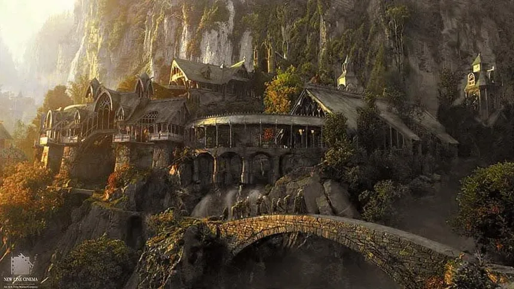

Publicaciones Recientes

La Comarca: El Refugio de los Hobbits
Acompáñanos en un viaje por la mágica Comarca, hogar de los Hobbits, en el corazón de la Tierra Media.
Fecha de publicación: 10 de Noviembre, 2024 | Autor: Frodo Bolsón | Categoría: Aventuras
Leer más
Minas Tirith: La Ciudad Blanca
Explora la majestuosa Minas Tirith, la capital de Gondor, un bastión de esperanza en la Tierra Media.
Fecha de publicación: 15 de Noviembre, 2024 | Autor: Aragorn | Categoría: Historia de Gondor
Leer más

Rivendel: El Refugio de los Elfos
Una mirada profunda a Rivendel, el hogar de los sabios Elfos, un lugar de belleza y serenidad.
Fecha de publicación: 20 de Noviembre, 2024 | Autor: Elrond | Categoría: Cultura Elfica
Leer más